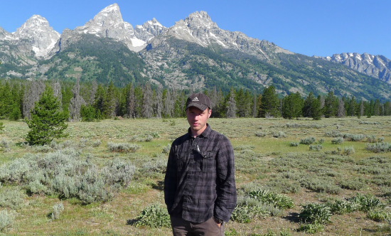

Hola, I'm Tim; I'm from northern Ohio. I'm a software developer and
amateur futurist with many interests.
I love all things computing. I have a bachelor of science degree
in computer science from Kent State University.
I'm passionate about designing and creating software. I'm interested in web
programming and web design. I love programming languages.
I spend much of
my free time researching computing-related topics including security, artificial
intelligence, algorithms, software engineering in general, systems design,
scientific computing, and the history of computer science.
Science, technology, art, and philosophy have been the major threads
that have run through my life.
I enjoy finding informative, inspiring articles and talks about programming
and computer science.
Here is an expanding list of some that I think are important and/or interesting. I try to follow the trends of cutting edge science and technology, particulary in computing. I am interested in the future of these, and the societal impact of things like artificial intelligence, big data, and networks. I have a bachelor of science degree in geology. I'm very involved with nutrition, food, health, and fitness. I love hiking, biking, and lifting weights. I (try to) eat healthfully. I'm obsessed with music. I've been playing guitar and recording music for what seems like a long time. I'm a student of the mind and the self. I'm interested in self-improvement, time management, productivity, psychology, meditation, and not least - what might be considered biohacking. I'm also a cactus enthusiast.
Here is an expanding list of some that I think are important and/or interesting. I try to follow the trends of cutting edge science and technology, particulary in computing. I am interested in the future of these, and the societal impact of things like artificial intelligence, big data, and networks. I have a bachelor of science degree in geology. I'm very involved with nutrition, food, health, and fitness. I love hiking, biking, and lifting weights. I (try to) eat healthfully. I'm obsessed with music. I've been playing guitar and recording music for what seems like a long time. I'm a student of the mind and the self. I'm interested in self-improvement, time management, productivity, psychology, meditation, and not least - what might be considered biohacking. I'm also a cactus enthusiast.
Object Oriented Programming with Java, C#, C++, Python, and PHP.
Javascript (and jQuery), HTML, and CSS, and web design.
Computer Science fundamentals (algorithms, data structures, logic, networks, operating systems, computer architecture, security).
Windows, Linux, and Mac operating systems.
Relational databases with MySQL and SQLite.
SVN and GIT version control.
C, OpenGL, Visual Studio.
Under Construction